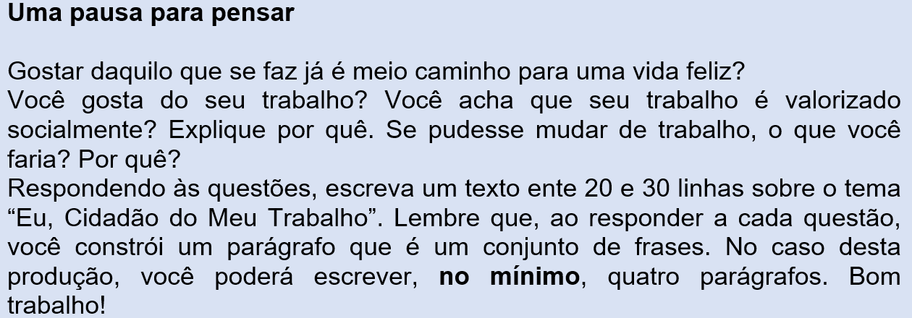
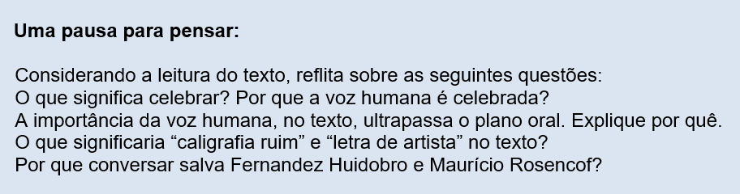

Capítulo 1: A construção civil e as emoções na relação com a cidade
Questão-problema:
Como os trabalhadores da construção civil se envolvem com as cidades que erguem? Eles têm os mesmos sentimentos do “cidadão” da canção de Zé Geraldo?
Cidadão
(Zé Geraldo)
Tá vendo aquele edifício, moço?
Ajudei a levantar. Foi um tempo de aflição,
Eram quatro condução: duas pra ir, duas pra voltar
Onde depois d’ele pronto, olho pra cima, fico tonto
Mas me chega um cidadão e me diz desconfiado:
̶ Tu tá aí ... admirado ou tá querendo roubar?
Meu domingo tá perdido, vou pra casa entristecido
Dá vontade de beber. E pra aumentar meu tédio
Eu não posso olhar pro prédio que eu ajudei a fazer.
Tá vendo aquele colégio, moço?
Eu também trabalhei lá; lá, eu quase me arrebento
Pus a massa, fiz cimento, ajudei a rebocar.
Minha filha, inocente, vem pra mim toda contente:
̶ Pai, vou me matricular.
Mas me diz um cidadão:
̶ Criança de pé no chão, aqui não pode estudar.
Esta dor doeu mais forte, por que eu deixei o norte?
Eu me pus a me dizer.
Lá a seca castigava, mas do pouco que eu plantava,
Tinha direito a comer.
Tá vendo aquela igreja, moço? Onde o padre diz amém
Pus o sino e o badalo, enchi minhas mãos de calos
Lá eu trabalhei também. Lá sim, valeu a pena,
Tem quermesse, tem novena e o padre me deixa entrar.
Foi lá que Cristo me disse:
̶ Rapaz, deixa de tolice, não se deixe amedrontar:
Fui eu quem criou a terra, enchi os rios, fiz a serra,
Não deixei nada faltar. Hoje o homem criou asas,
E, na maioria das casas, eu também não posso entrar.
Uma pausa para pensar:
A interpretação de Zé Geraldo para esta canção é muito bonita.

Culturas no Brasil:
O texto selecionado para este capítulo, escrito por Simões Lopes Neto, é regionalista, dos pampas do Rio Grande do Sul. Por isso, possui expressões e palavras típicas que nem todo mundo conhece. Você vai gostar deste conto: ele faz uma homenagem à dignidade e à honestidade do povo da nossa terra.
,
Trezentas onças
(J. Simões Lopes Neto)
Eu tropeava, nesse tempo. Duma feita que viajava de escoteiro, com a guaiaca empanzinada de onças de ouro, vim varar aqui neste mesmo passo, por me ficar mais perto da estância da Coronilha, onde devia pousar.
Parece que foi ontem!... Era fevereiro; eu vinha abombado da troteada.
— Olhe, ali, na restinga, à sombra daquela mesma reboleira de mato que está nos vendo, na beira do passo, desencilhei; e estendido nos pelegos, a cabeça no lombilho, com o chapéu sobre os olhos, fiz uma sesteada morruda.
Despertando, ouvindo o ruído manso da água tão limpa e tão fresca rolando sobre o pedregulho, tive ganas de me banhar; até para quebrar a lombeira... e fui-me à água que nem capincho!
Debaixo da barranca havia um fundão onde mergulhei umas quantas vezes; e sempre puxei umas braçadas, poucas, porque não tinha cancha para um bom nado. E solito e no silêncio, tornei a vestir-me, encilhei o zaino e montei. Daquela vereda andei como três léguas, chegando à estância cedo ainda, obra assim de braça e meia de sol.
— Ah!... esqueci de dizer-lhe que andava comigo um cachorro brasino, um cusco mui esperto e bom vigia. Era das crianças, mas às vezes dava-lhe para acompanhar-me, e depois de sair a porteira, nem por nada fazia cara-volta, a não ser comigo. E nas viagens dormia sempre ao meu lado, sobre a ponta da carona, na cabeceira dos arreios.
Por sinal que uma noite... Mas isso é outra cousa: vamos ao caso.
Durante a troteada bem reparei que volta e meia o cusco parava-se na estrada e latia e corria pra trás, e olhava-me, olhava-me e latia de novo e troteava um pouco sobre o rastro; — parecia que o bichinho estava me chamando! ... Mas como eu ia, ele tornava a alcançar-me, para daí a pouco recomeçar.
— Pois, amigo! Não lhe conto nada! Quando botei o pé em terra na ramada da estância, ao tempo que dava as — boas tardes! — ao dono da casa, aguentei um tirão seco no coração... não senti na cintura o peso da guaiaca!
Tinha perdido trezentas onças de ouro que levava, para pagamento de gados que ia levantar.
E logo passou-me pelos olhos um clarão de cegar, depois uns coriscos tirante a roxo... depois tudo me ficou cinzento, para escuro...
Eu era mui pobre — e ainda hoje, é como vancê sabe... —; estava começando a vida, e o dinheiro era do meu patrão, um charqueador, sujeito de contas mui limpas e brabo como uma manga de pedras...
Assim, de meio assombrado me fui repondo quando ouvi que indagavam:
— Então patrício? Está doente?
—Obrigado! Não senhor, respondi, não é doença; é que sucedeu-me uma desgraça: perdi uma dinheirama do meu patrão...
— A la fresca!...
— É verdade... antes morresse, que isto! Que vai ele pensar agora de mim!...
— É uma dos diabos, é... mas; não se acoquine, homem!
Nisto o cusco brasino deu uns pulos ao focinho do cavalo, como querendo lambê-lo, e logo correu para a estrada, aos latidos. E olhava-me, e vinha e ia, e tornava a latir...
Ah!... E num repente lembrei-me bem de tudo. Parecia que estava vendo o lugar da sesteada, o banho, a arrumação das roupas nuns galhos de sarandi, e, em cima de uma pedra, a guaiaca e por cima dela o cinto das armas, e até uma ponta de cigarro de que tirei uma última tragada, antes de entrar na água, e que deixei espetada num espinho, ainda fumegando, soltando uma fitinha de fumaça azul, que subia, fininha e direita, no ar sem vento...; tudo, vi tudo.
Estava lá, na beirada do passo, a guaiaca. E o remédio era um só: tocar a meia rédea, antes que outros andantes passassem.
Num vu estava a cavalo; e mal isto, o cachorrito pegou a retouçar, numa alegria, ganindo — Deus me perdoe! — que até parecia fala!
E dei de rédea, dobrando o cotovelo do cercado.
Ali logo frenteei com uma comitiva de tropeiros, com grande cavalhada por diante, e que por certo vinha tomar pouso na estância. Na cruzada nos tocamos todos na aba do sombreiro; uns quantos vinham de balandrau enfiado. Sempre me deu uma coraçonada para fazer umas perguntas... mas engoli a língua.
Amaguei o corpo e, penicando de esporas, toquei a galope largo.
O cachorrinho ia ganiçando, ao lado, na sombra do cavalo, já mui comprida.
A estrada estendia-se deserta; à esquerda, os campos desdobravam-se a perder de vista, serenos, verdes, clareados pela luz macia do sol morrente, manchados de pontas de gado que iam se arrolhando nos paradouros da noite; à direita, o sol; muito baixo, vermelho-dourado, entrando em massa de nuvens de beiradas luminosas.
Nos atoleiros, secos, nem um quero-quero: uma que outra perdiz, sorrateira, piava de manso por entre os pastos maduros; e longe, entre o resto da luz que fugia de um lado e a noite que vinha, peneirada, do outro, alvejava a brancura de um joão-grande, voando, sereno, quase sem mover as asas, como uma despedida triste, em que a gente também não sacode os braços...
Foi caindo uma aragem fresca; e um silêncio grande, em tudo.
O zaino era um pingaço de lei; e o cachorrinho, agora sossegado, meio de banda, de língua de fora e de rabo em pé, troteava miúdo e ligeiro dentro da polvadeira rasteira que as patas do flete levantavam.
E entrou o sol; ficou nas alturas um clarão afogueado, como de incêndio num pajonal; depois, o lusco-fusco; depois, cerrou a noite escura; depois, no céu, só estrelas... só estrelas...
O zaino atirava o freio e gemia no compasso do galope, comendo caminho. Bem por cima da minha cabeça as Três-Marias, tão bonitas, tão vivas, tão alinhadas, pareciam me acompanhar... lembrei-me dos meus filhinhos, que as estavam vendo, talvez; lembrei-me da minha mãe, do meu pai, que também as viram, quando eram crianças e que já as conheceram pelo seu nome de Marias, as Três-Marias. Amigo! Vancê é moço, passa a sua vida rindo...; Deus o conserve!... sem saber nunca como é pesada a tristeza dos campos quando o coração pena!...
— Há que tempos eu não chorava!... Pois me vieram lágrimas..., devagarinho, como gateando, subiram... tremiam sobre as pestanas, luziam um tempinho... e ainda quentes, no arranco do galope lá caíam elas na polvadeira da estrada, como um pingo d'água perdido, que nem mosca nem formiga daria com ele! ...
Por entre as minhas lágrimas, como um sol cortando um chuvisqueiro, passou-me na lembrança a toada dum verso lá dos meus pagos:
Quem canta refresca a alma,
Cantar adoça o sofrer;
Quem canta zomba da morte:
Cantar ajuda a viver! ...
Mas que cantar podia eu! ...
O zaino respirou forte e sentou e sentou, trocando a orelha, farejando no escuro: o bagual tinha reconhecido o lugar, estava no passo.
Senti o cachorrinho respirando, como assoleado. Apeei-me.
Não bulia uma folha; o silêncio, nas sombras do arvoredo, metia respeito... que medo não, que não entra em peito de gaúcho!
Embaixo, o rumor da água pipocando sobre o pedregulho; vagalumes retouçando no escuro. Desci, dei com o lugar onde havia estado; tenteei os galhos do sarandi; achei a pedra onde tinha posto a guaiaca e as armas; corri as mãos por todos os lados, mais pra lá, mais pra cá...; nada! nada!...
Então, senti frio dentro da alma... o meu patrão ia dizer que eu o havia roubado!... roubado!... Pois então eu ia lá perder as onças!... Qual! Ladrão, ladrão, é que era! ...
E logo uma tenção ruim entrou-me nos miolos: eu devia matar-me, para não sofrer a vergonha daquela suposição. É; era o que eu devia fazer: matar-me... e já, aqui mesmo!
Tirei a pistola do cinto; amartilhei o gatilho... benzi-me, e encostei no ouvido o cano, grosso e frio, carregado de bala...
— Ah! patrício! Deus existe! ...
No refilão daquele tormento, olhei para diante e vi... as Três-Marias luzindo na água... o cusco encarapitado na pedra, ao meu lado, estava me lambendo a mão... e logo, logo, o zaino relinchou lá em cima, na barranca do riacho, ao mesmíssimo tempo que a cantoria alegre de um grilo retinia ali perto, num oco de pau!... — Patrício! não me avexo duma heresia; mas era Deus que estava no luzimento daquelas estrelas, era Ele que mandava aqueles bichos brutos arredarem de mim a má tenção...
O cachorrinho tão fiel lembrou-me a amizade da minha gente; o meu cavalo lembrou-me a liberdade, o trabalho, e aquele grilo cantador trouxe a esperança...
Eh-pucha! patrício, eu sou mui rude... a gente vê caras, não vê corações...; pois o meu, dentro do peito, naquela hora, estava como um espinilho ao sol, num descampado, no pino do meio-dia: era luz de Deus por todos os lados!...
E já todo no meu sossego de homem, meti a pistola no cinto. Fechei um baio, bati o isqueiro e comecei a pitar.
E fui pensando. Tinha, por minha culpa, exclusivamente por minha culpa, tinha perdido as trezentas onças, uma fortuna para mim. Não sabia como explicar o sucedido, comigo, acostumado a bem cuidar das cousas. Agora... era vender o campito, a ponta de gado manso — tirando umas leiteiras para as crianças e a junta dos jaguanés lavradores — vender a tropilha dos colorados... e pronto! Isso havia de chegar, folgado; e caso mermasse a conta... enfim, havia de se ver o jeito a dar... Porém matar-se um homem, assim no mais... e chefe de família... isso, não!
E despacito vim subindo a barranca; assim que me sentiu, o zaino escarceou, mastigando o freio.
Desmaneei-o, apresilhei o cabresto; o pingo agarrou a volta e eu montei, aliviado.
O cusco escaramuçou, contente; a trote e galope voltei para a estância.
Ao dobrar a esquina do cercado enxerguei luz na casa; a cachorrada saiu logo, acuando. O zaino relinchou alegremente, sentindo os companheiros; do potreiro outros relinchos vieram.
Apeei-me no galpão, arrumei as garras e soltei o pingo, que se rebolcou, com ganas.
Então fui para dentro: na porta dei o — Louvado seja Jesu-Cristo; boa-noite! — e entrei, e comigo, rente, o cusco. Na sala do estancieiro havia uns quantos paisanos; era a comitiva que chegava quando eu saía; corria o amargo.
Em cima da mesa a chaleira, e ao lado dela, enroscada, como uma jararaca na ressolana, estava a minha guaiaca, barriguda, por certo com as trezentas onças dentro.
— Louvado seja Jesu-Cristo, patrício! Boa-noite! Entonces, que tal le foi o susto?...
E houve uma risada grande de gente boa.
Eu também fiquei-me rindo, olhando para a guaiaca e para o guaipeva, arrolhadito aos meus pés...
(Fonte: NETO, João Simões Lopes. Contos Gauchescos e lendas do Sul. Porto alegre: L&PM pocket, 1998.)

Vamos interpretar o texto lido? Utilize as questões a seguir como um guia para isso.
1. Resuma em dez linhas a história que você leu.
2. Quem é o narrador da história?
3. Quem é o protagonista?
4. Descreva as características psicológicas do tropeiro.
5. O tropeiro não era de todo pobre. Explique esta afirmação.
6. Podemos afirmar que o cachorrinho brasino e o zaino têm importância na história? Por quê?
7. O tempo da história é cronológico, vai da tarde à noite. Quando o tropeiro volta para tentar encontrar a guaiaca, o sol já está se pondo. Há no texto várias passagens que comprovam isso. Diga quais são.
8. Como você pôde perceber, há várias passagens em que o tropeiro se expressa diferentemente do modo padronizado da língua portuguesa. Há a interferência do espanhol pela aproximação do pampa com o Uruguai e a Argentina. Reescreva os enunciados abaixo, fazendo uso da nossa língua padrão:
a) E solito e no silêncio, tornei a vestir-me, encilhei o zaino e montei.
b) — Ah!... esqueci de dizer-lhe que andava comigo um cachorro brasino , um cusco mui esperto e bom vigia.
c) Eu era mui pobre — e ainda hoje, é como vancê sabe...
d) — A la fresca!...
e) Eh-pucha! patrício, eu sou mui rude...
f) Não sabia como explicar o sucedido, comigo, acostumado a bem cuidar das cousas.
g) E despacito vim subindo a barranca ...
h) Então fui para dentro: na porta dei o — Louvado seja Jesu-Cristo; boa-noite!
i) Entonces, que tal le foi o susto?...
j) ... olhando para a guaiaca e para o guaipeva, arrolhadito aos meus pés...
9. Encontre sinônimos para as palavras em negrito, de modo que o enunciado não perca a clareza:
a) Duma feita que viajava de escoteiro, com a guaiaca empanzinada de onças de ouro ...
b) ... fiz uma sesteada morruda.
c) ... tive ganas de me banhar; até para quebrar a lombeira...
d) Tinha perdido trezentas onças de ouro que levava, para pagamento de gados que ia levantar.
e) E o remédio era um só: tocar a meia rédea, antes que outros andantes passassem.
f) Num vu estava a cavalo ...
g) E logo uma tenção ruim entrou-me nos miolos: eu devia matar-me, para não sofrer a vergonha daquela suposição.
O uso do modo subjunto
No conto “Trezentas Onças” tem uma passagem em que, desesperado por ter perdido a bolsa com o dinheiro do patrão, o tropeiro diz: “— É verdade... antes morresse, que isto! Que vai ele pensar agora de mim!...” Isto é, o tropeiro teria preferido estar morto que passar por aquilo, mas, na verdade, ele não morreu. A ideia de morrer era hipotética, ficou só no seu pensamento.
O modo subjuntivo é isso: reflete ações e fatos que ficam no universo subjetivo dos desejos, das hipóteses, das dúvidas na cabeça da gente. Se alguém diz: “Tomara que ele volte”, ele voltou? Não. Ele voltará? Não se sabe. Há alguém que deseja muito isso, há uma probabilidade, mas não uma certeza.
Então, sempre que se quer passar desejo, dúvidas, hipóteses, usamos o modo subjuntivo. Repare as diferenças entre o modo indicativo e o subjuntivo:

Você deve ter observado que para ser usado o subjuntivo, é preciso que sejam colocadas algumas palavras que induzem ao subjuntivo:
1. O “tomara que” pode induzir ao presente do subjuntivo.
2. O “se” pode levar ao imperfeito do subjuntivo.
3. O “quando” pode puxar o futuro do subjuntivo.
Praticando - Reflexão e ação
Complete com os verbos no modo subjuntivo:
1. Tomara que ele (lembrar) ____________ de tudo!
2. Deus queira que nós (encontrar) ____________ o anel que perdemos!
3. Se ele (ter) ____________ escutado o que lhe disse ontem, não teria esse problema agora.
4. Quando nós nos (conscientizar)____________que aqui viemos para ajudar os outros, a vida vai se tornar mais leve.
5. Se nós (saber) _____________ da verdade antes, tudo seria mais fácil.
6. Tomara Deus ele (chegar) _____________ o mais breve possível.
7. Quando eles (saber) ____________ a verdade, não sei se eles irão nos perdoar.
8. Tomara que Marina (se tornar) __________ uma moça agradável.
9. Depois que eu contar o caso, eu quero que eles (morrer) _________ de rir.
10. Tomara que os juízes (conduzir) ____________ este caso com a imparcialidade desejada.
O que aprendi:
- Uso dos verbos no modo subjuntivo: sempre que se quer passar desejo, dúvidas, hipóteses, usamos os verbos no modo subjuntivo.